← 返回阅读库 · 原论文目录
论文讲解阅读文档 · 新模型 · v057
Dynamic Vision Transformers with Adaptive Sequence Length[2105.15075]
视频时长 00:12:20；讲解文字 5,780 字符；提取讲解画面 33 张。按视频原顺序阅读，每段文字保留时间戳。
文字来自整段视频的自动语音转写，按自然停顿分段，并与 PPT / 论文页面 / 演示画面对齐。未将讲解压缩为摘要；术语、数字和口述公式请结合画面及原论文核对。 阅读稿已校正规范部分明确术语误识别；原始逐字稿和每处修改记录另行保留。
讲解画面为源视频截图（640×360），不是可编辑 PPT 文件。全片按每秒 2 帧扫描内容变化，逐步展开页保留；连续动画保留代表画面。清晰度受源视频限制。
下载完整资料包 · 含离线 HTML、PDF、Word、全部 PPT 画面和字幕。
原论文与材料
Not All Images are Worth 16x16 Words: Dynamic Transformers for Efficient Image Recognition · 下载完整 PDF（16 页）
Not All Images are Worth 16x16 Words: Dynamic Vision Transformers with Adaptive Sequence Length · 下载完整 PDF（14 页）
按时间阅读
00:00:00–00:00:28 · 画面 001
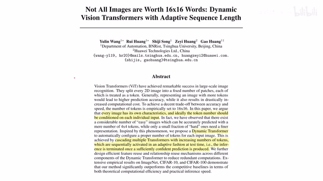
00:00:00–00:00:28 · 画面 001大家好,今天我们来快速说一篇论文 Not all images are worth 16x16 Words: Dynamic Vision Transformers with Adaptive Sequence Length。那么对于之前的 Vision Transformer 来说，它是把所有的图像都分成了数量相同的 Patches，然后再做后面的处理。那显然对于不同难度的图像，本文的作者认为这种固定 Token 数量的方法是有改善的空间的所以呢，本文呢就提出了这个 adaptive sequence length。那这里呢，作者的死心的思想呢就是我维持三个 level 的这样一个 transformer。那第一个 level 呢，他是把这个图像分成二乘二的 patches，也就是只有四个 tokens。那这个如果说简单的图像能够识别出来，这是最好的。但是呢，如果我们这个简单的网络呢对于这个图像识别的结果不是那么确定，那么随后呢我们就要动用一个 high level 的这样一个网络
00:00:28–00:00:37 · 画面 002
00:00:28–00:00:37 · 画面 00200:00:37–00:01:11 · 画面 003
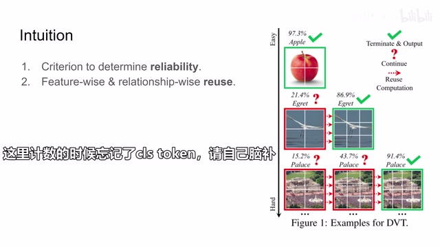
00:00:37–00:01:11 · 画面 003它把这个图像分成 3x3 的 patches，也就是一共 9 个 token。那么如果它能够得到一个确切的结果，那也是猴啊。但是同理，如果我们这个 level 的网络这个 model 它对这个图像还不是这么可靠，那么我们就要请到更加 high level 的网络。这里我们看到这个网络它把这个图像分成了 4x4 的 patches，也就是 16 个 token。
00:01:11–00:01:28 · 画面 004
00:01:11–00:01:28 · 画面 004那么这样子呢，最终得到一个结果。那么当然呢，你可以预见到随着我们图像难度的增加，你可以把这个图像呢切得更加细碎，划分出更多的 patches。也就是说我们这个输入的 sequence 呢也变得更加长。那么这个呢就是本文核心的 adaptive sequence 的思想。整个这个思想呢让人不得不想起早年间互联网上流传的这样一组图啊，懂的朋友呢一看一眼呢自然就懂了。那么为了实现这样的一个结构呢，同时呢让我们的这个结构不是这么死板，不是说单纯的。
00:01:28–00:01:35 · 画面 005
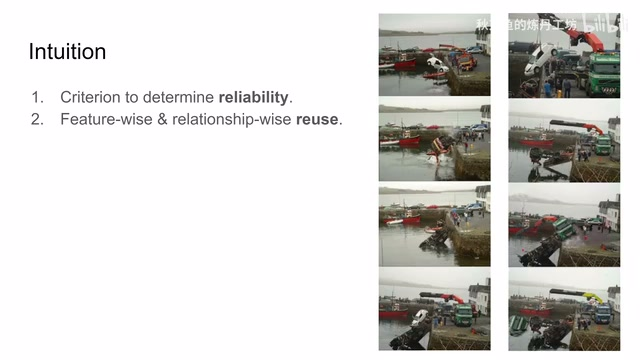
00:01:28–00:01:35 · 画面 00500:01:35–00:02:30 · 画面 006
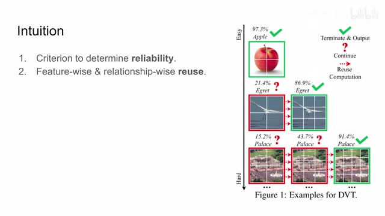
00:01:35–00:02:30 · 画面 006我们的每一个 level 他们相互不相关。首先我们要知道我们网络输出的结果是否可靠。简单来说就是当我的网络输出的结果它的可靠程度低于某一个值的时候，我们认为低层的网络它输出的结果是不可靠的。这个时候我们要动用更高层的网络。这个思想是非常简单的。我们最后再介绍它的实现。那么随后也是本文最核心的贡献就是 feature-wise 还有 relationshipwisereuse也就是说，我底层网络它在推理过一遍之后它产生的这些信息，我们并不是说白干了。这些信息对我们后续的网络更高层的网络它做推理是有一定的帮助的。
那么下面呢，我们就要详细介绍一下作者是怎么样通过这个 feature-wise 还有这个 relationshipwise 他们的这个信息的 reuse 来实现这个信息的从低层网络向高层网络传递。那么在此之前呢，我们先做一个快速的回忆。这个呢是本文提出的全局的框架。我们首先先忽略这些 reuse，我们可以看到这里呢有三个 level 的这个 vision transformer。那像第一个 vision transformer 呢，他是处理四个 patches 加上一个 classification token，他的这个 sequence 呢是五
00:02:30–00:03:39 · 画面 007
00:02:30–00:03:39 · 画面 007那么第二个这个 transformer 它处理的是 10，第三个是处理的是 17。那么以此类推，你当然可以加更多的网络。那么这里你的 vision transformer 它的结构当然是可以选择你任何喜欢的结构。那此外要注意的是这里的 patch embedding 也就是每一个 patch 它变成的这个 feature 它的长度是一个固定的值，我们叫它 D。那么对于每一个 level 的网络它的这个 embedding 的长度都是 D。
这样就体现了一个从粗到细的过程。原来长度为 D 的 vector 它描述的是这么大一个 patch。那么随着网络层次的增加，那么现在这个长度为 D 的 vector 描述的是这么小的一个 patch。显然它关注的就是更加细节的东西了。那 Vision Transformer 我们之前已经说了很多很多次了，这里我们就不再做过多的介绍了。那么随后我们就来看这些 reuse 作者是怎么设计的。那么首先是这个 feature reuse
00:03:39–00:03:55 · 画面 008
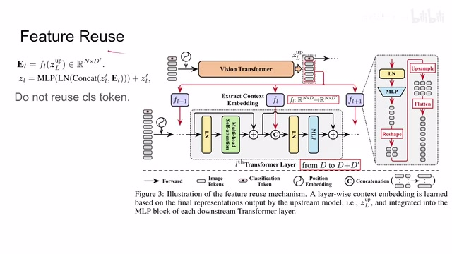
00:03:39–00:03:55 · 画面 008这里作者的图示和它的提供的公式有一点不太符合。在确认过作者的实际的代码之后，我们应该以作者的图示为准。那么我们直接来就着图来解释一下。首先我们来看我们最上游 VisionTransformer，它在收到我们的图像之后给出了我们所有的 Tokens。我们这里要附用的是这些 ImageTokens，它们作为 Feature 来附用到下游的。
00:03:55–00:03:56 · 画面 009
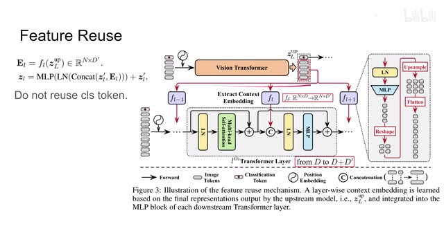
00:03:55–00:03:56 · 画面 00900:03:56–00:04:06 · 画面 010
00:03:56–00:04:06 · 画面 01000:04:06–00:04:08 · 画面 011
00:04:06–00:04:08 · 画面 011这些这个网络的结构当中。那么具体的附用呢，这里我们可以看到作者针对下轮的网络的每一个 block 都有一个 function。这个 function 呢是各不相同的。在这个 function 里面呢，他是先过了一个 layer normalization，然后是这个 mlp。这一通操作呢是原来把我们 n 个这个长度为 d 的这个 vector 这些 token 呢变成了 n 个长度为 d prime 的这个 vector。
00:04:08–00:06:08 · 画面 012
00:04:08–00:06:08 · 画面 012实际操作中的 d' 是要小于 d。这样子是为了在我们下游网络中的计算的效率。那么这里你就应该已经觉察了这里的公式跟我们实际的图示是不一样的。n 应该是 token 的数量，但实际的操作中我们并没有把 classification token 使用进来，所以这里的数量应该是 n-1 的 token 变得缩短了一些。这里的 n 乘以 d'实际上是到这里。
这些 vector 它的长度呢是 d prime。但是有一个很显然的问题就是你下一层的网络呢，因为是把图像分成了更多的 patches，也就是说你下一层的 transformer 呢接收了更多的 tokens，有更长的这个序列的长度。那么你为了上一层的输出呢能 match 下一层的这个输入呢，你就需要这里做一些生产样的操作。你可以看到这里呢，作者把这些 token 呢也摆成了原来这个图像的形状，然后呢做一个生产样。
再把它呢展成这个意味的 token。这样子呢，token 的数量呢就跟这个下一层输入的这个 token 的数量相匹配了。那么匹配了之后呢，我这里的这个 token 直接串接上这里的这些 token，那就可以组成了一个更长的一个 token。那可以看到串接的操作呢是长这个样子。那也就是说，我在这里原来呢，我这里是 9 个长度为 d 的这个 token，那我串接上 9 个这个长度为 d prime 的这个 token。
那得到了就是 9 个长度为 D 加 D'的这个 token。然后呢经过这个 layer normalization 这个 MLP。但是对于这个 MLP 呢，你要特别注意。它的输入呢虽然是 D 加 D'长度为 D 加 D'的这个 vector。但是它的输出呢还是长度为 D 的这个 vector。
00:06:08–00:06:46 · 画面 013
00:06:08–00:06:46 · 画面 013这样子呢它才能保证这个 skip connection。它的维度呢是一样的。它才能直接加起来。所以呢也就是说，你可以看到在这个位置呢。它的 vector 的长度是 D它这里呢长度就变成了 D 加 D'那这里呢出来之后呢。长度呢还是 D这个呢是我们在需要在下个网络中注意的地方。那么此外呢我们不要忘记这里还有一个 classification token。
那么这里呢作者说实验证明呢。我们如果说 reuse 这个 classification token 的话。它的性能呢并没有那么好。所以呢对于这个 classification token这里在串接的时候呢。我们就给它串接上一杯零上去。让它的尺寸呢变成 D 加 D prime 就可以。那么以上呢就是作者如何使用的这些 feature。
00:06:46–00:06:47 · 画面 014
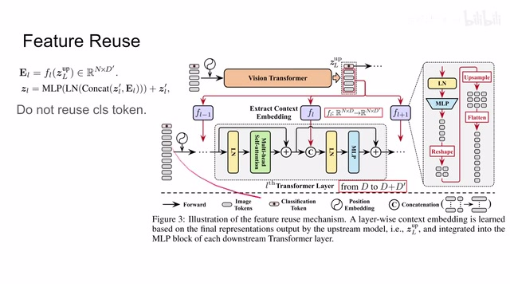
00:06:46–00:06:47 · 画面 01400:06:47–00:07:00 · 画面 015
00:06:47–00:07:00 · 画面 015大家一定要注意这个公式的表达呢。是不确切的除了这个 n 的问题之外。还有就是这个 resize这个 assembly它在这个公式中没有体现。那么随后我们再看另一个 reuse。叫做这个 relationship reuse
00:07:00–00:09:00 · 画面 016
00:07:00–00:09:00 · 画面 016这里主要就是我们的 attention map它里面的操作那么首先我们看到。在我们的上游网络中作者这里把每一层的 attention map给它串接起来这个 a 呢在原来这个 multi-head self-attention 里面呢是在做了 softmax 之后直接乘以这个 value 啊然后呢得到这个 attention 之后的这个值的所以它的尺寸呢应该是 n 个 token 乘以 n 个 token 但是呢因为我们是 multi-head self-attention 这个 nh 呢表示这个 head 的数量那么最后呢我们因为把 l 层创建起来所以最终呢这个 aup 它的尺寸呢就是这个 nup 乘以 nup 再乘以这样一串这样一个尺寸
这个呢就对上了那么他呢在作者这个示意图里呢就长这个样子然后呢你可以看到作者把它恢复成了这个 1 乘以 1 然后乘以这个 nup 这个 tension 这个深度的这样一个 vector 他呢有 nup squared 这样一个数量经过一个 MLP 之后呢把原来是长度是 nh 乘 l 这样的一个 vector 呢变成了这个长度的是 nh 的这样一个数量然后呢再把它组合成这个 nup 乘 l 但是深度呢变成 nh这样一个 attention map 在这个深度这个尺度上呢这个 attention map 呢和我们下个 level 的这个 attention 呢它就匹配上了那么随后呢我们还需要再匹配的呢就是我们的这个 token 的数量那么从 nup 呢变成 n 个但是要注意呢这个 up sample 呢它不是直接在二维尺度上这样直接做这个矩阵缩放就完了它不是这样的
因为我们希望在这个搜放的时候呢它能够尽量符合原来图像里面的这个语义的信息我们可以看到呢这里原来呢我们是有 h 乘 w 的这样的一个 patches 那么它呢组成了这个 attention map 那么现在呢我要先把它 resize 成 h 乘 w 这样的一个形式那么这个形式呢我们图像的 patch 呢就符合我们原来的这个每一个 patch 在图像中的位置的排布了那么通过把这个矩阵 up sampling 呢我们在直觉上就感觉它跟原来图像上做 up sampling 呢效果是一样的那么呢就得到这个 H'乘以 W'这样的这个 attention 随后呢我们把它再转回成这样一个二维的这个 attention map 的这个形式这样呢这个 attention map 的一个边从 HW 扩展到这个 H'乘以 W'这样一个形式
00:09:00–00:09:18 · 画面 017
00:09:00–00:09:18 · 画面 017那么同理呢我们可以重复刚刚这样操作呢把两个边都扩展成这个 h prime 和 w prime 这个呢就是我们在这个 upsampling 过程中呢发生的这个具体的操作这里呢你需要特别注意一下那么这样子呢我们就得到一个 nxnxnh 的这样一个 attention map 那这个 attention map 呢跟我们下一个 level 的这个 attention map 呢它的尺寸就完全一样了
00:09:18–00:09:19 · 画面 018
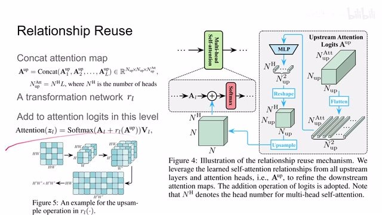
00:09:18–00:09:19 · 画面 01800:09:19–00:09:40 · 画面 019
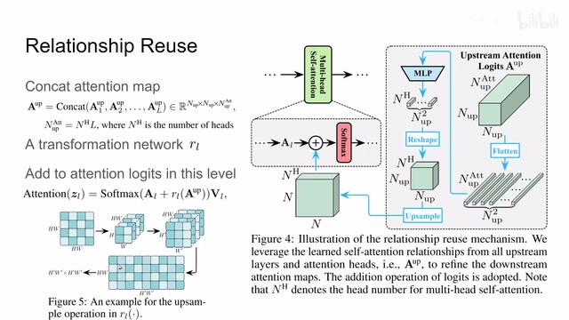
00:09:19–00:09:40 · 画面 019我们把这两个 attention map 给它加起来，再过 softmax，再乘以 value 就可以得到我们下一个 level 的 attention 模块的它的输出。好的，那么以上就是本文提出的 relationship reuse。那么再回到我们一开始介绍 overview，你就可以看到信息是一层一层的从上游的 transformer 传递到下游的 transformer 里面的。那么最后我们还有一个问题
00:09:40–00:09:48 · 画面 020
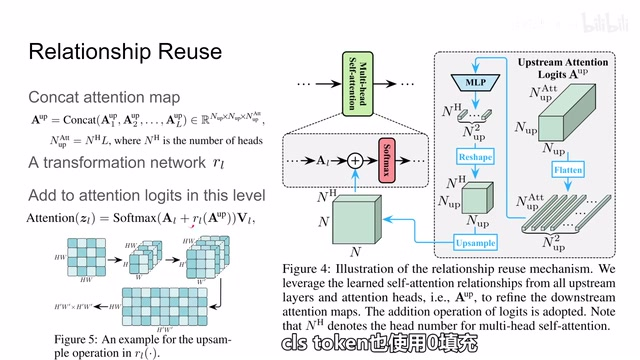
00:09:40–00:09:48 · 画面 02000:09:48–00:09:51 · 画面 021
00:09:48–00:09:51 · 画面 02100:09:51–00:10:09 · 画面 022
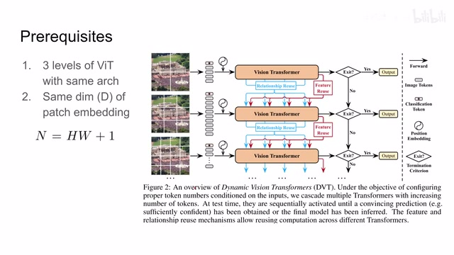
00:09:51–00:10:09 · 画面 022就是这里我们应该如何判断说使用这一层网络的结果呢还是说调用更高一层的网络呢这里呢就是作者提出的 adaptive inference 其实呢就是非常简单
00:10:09–00:10:18 · 画面 023
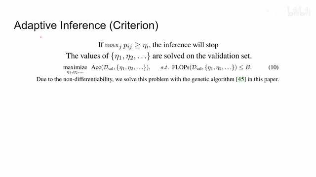
00:10:09–00:10:18 · 画面 023就是作者使用这个遗传算法在 validation set 上找到既满足模型复杂度模型运算量它的要求的，又满足相应的准确率它的要求的这么一个阈值。也就是说你对每一个 level 上都有这么个阈值。然后我的网络输出的结果在 softmax 之后最大的值大于我们的阈值，也就是说网络非常确信这就是那么一个东西，这个时候我们就退出，否则我们就使用更高一层的更复杂的网络来进行推测
00:10:18–00:10:19 · 画面 024
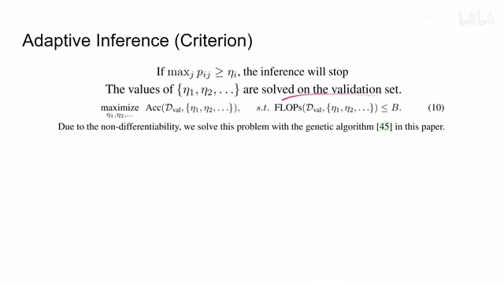
00:10:18–00:10:19 · 画面 02400:10:19–00:10:47 · 画面 025
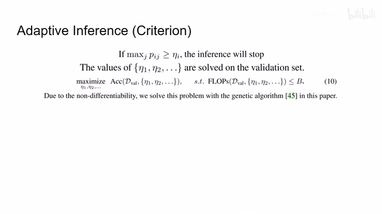
00:10:19–00:10:47 · 画面 025好的，那么以上就是本文涉及的所有的主要的技术要点。我们来看作者汇报的结果。首先呢，像这个因为是 net 还有 c 法，那么你可以看到呢，本文的主要的贡献呢，就是我在这个计算量非常小的情况下，能达到与原始模型相称的性能。
00:10:47–00:10:58 · 画面 026
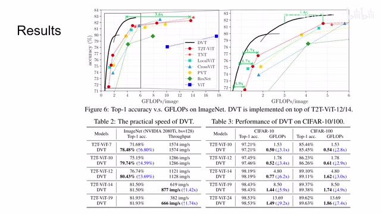
00:10:47–00:10:58 · 画面 026然后这个呢是 image net，那么下面呢还有这个 super 10。那么你可以看到，本文的处理的速度呢，相对的有这个很显著的提升。随后呢，我们关注的这个 ablation，主要呢就是这个 feature relationship 它的 reuse 它的作用。从这里呢，你可以看到，虽然这个 reuse 增加之后呢，会增加我们下游网络它的这个计算量。
00:10:58–00:10:59 · 画面 027
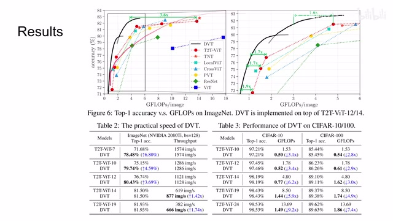
00:10:58–00:10:59 · 画面 02700:10:59–00:11:06 · 画面 028
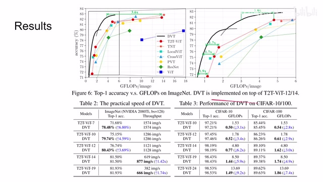
00:10:59–00:11:06 · 画面 02800:11:06–00:11:21 · 画面 029
00:11:06–00:11:21 · 画面 029但是它能够提高我们整个模型的准确率。那么此外，包括如何 reuse，作者也做了一些讨论。感兴趣的朋友可以在原文中仔细看看作者的各种配置。那么此外，作者还测试了在不同计算性能下，我们的网络会在哪一层，就是哪一个 level 的模型就停止工作。可以看到，随着我们给出的算力不断增加，这个网络会逐渐倾向于使用更深的网络去做推测，来获得更好的性能。
00:11:21–00:11:24 · 画面 030
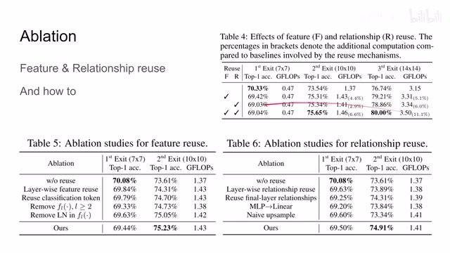
00:11:21–00:11:24 · 画面 03000:11:24–00:11:29 · 画面 031
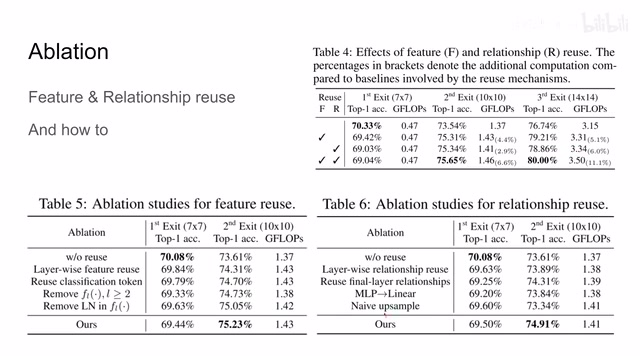
00:11:24–00:11:29 · 画面 03100:11:29–00:12:19 · 画面 032
00:11:29–00:12:19 · 画面 032而且作者提出的这个高于一定阈值就停止的这样一个机制呢，是能够比随机推出的这样一个机制呢取得更好的这个检测的性能的啊。这个是显然的事情了。所以总的来看呢，本文是一篇在这个公众实践上相对具有一定参考意义的这么一篇论文啊。他的这个实验呢，包括他的结论呢，能够对上能够自圆其说。但是你要说特别大的创新或者发现呢，好像又没有那么足够那么以上呢，就是我对这篇论文的简单分析。感谢您的收看，再见。
00:12:19–00:12:20 · 画面 033
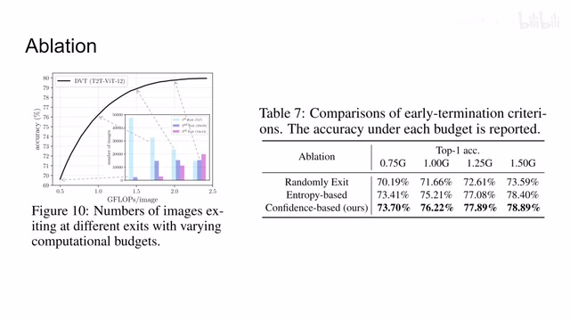
00:12:19–00:12:20 · 画面 033转写与来源说明 · 1 个自动复核提示
保留 66 个原始语音片段，1 个片段触发自动复核提示。提示仅用于定位可能的术语、重复或识别问题，不等于已确认错误。
讲解画面为源视频截图（640×360），不是可编辑 PPT 文件。全片按每秒 2 帧扫描内容变化，逐步展开页保留；连续动画保留代表画面。清晰度受源视频限制。
原视频：paper/合集_2026-10-16_新模型/[论文简析]Dynamic Vision Transformers with Adaptive Sequence Length[2105.15075].mp4
SHA-256：838855093fdb6524aa0e8a52c91e6203462b95d1abb69fce28bd681806b84169
我们不要忘记这里还有一个 classification token。
全文按视频语音与画面制作。原论文可从上方链接下载；完整资料包保留全文、原始逐字稿、字幕和校对记录。